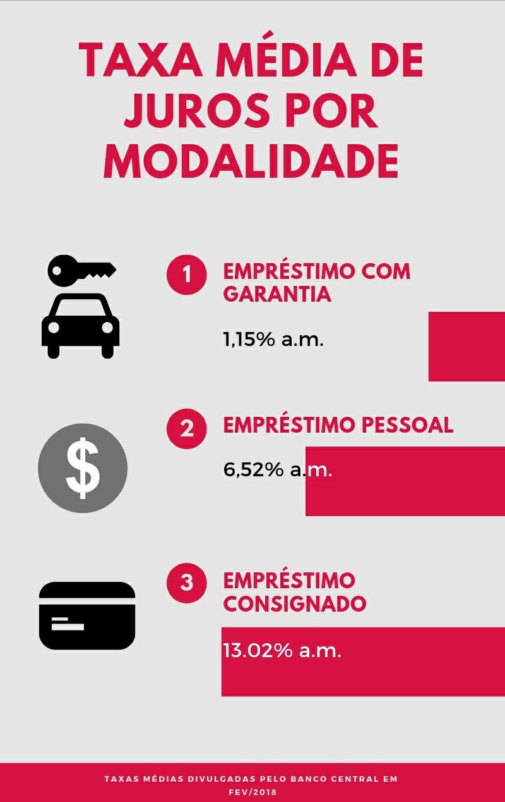
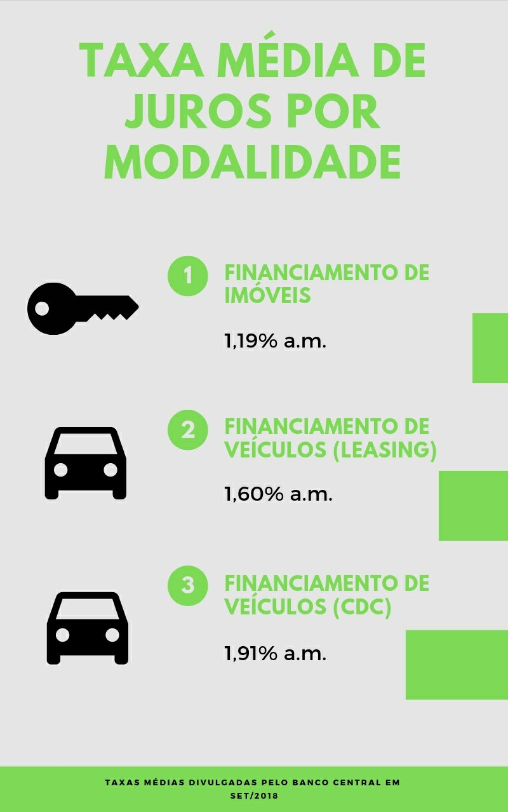

Os termos empréstimo e financiamento podem causar muita confusão de início, pois soam como coisas parecidas. Apesar disso, são categorias de crédito diferentes e devem ser levadas em consideração em períodos de vida distintos.
Antes de entender qual das duas é a melhor opção para você no momento, iremos te explicar as características e finalidades de cada uma para não haver dúvida na hora de decidir como pegar o dinheiro emprestado. Então vamos lá!
EmpréstimoA autonomia é o aspecto mais evidente que diferencia o empréstimo em relação ao financiamento.
Nesta modalidade, você não precisa explicar para a instituição financeira a finalidade que dará para o dinheiro emprestado, sendo preciso somente respeitar o prazo do pagamento das parcelas.
Você não perde tanto tempo com burocracia e consegue que o seu empréstimo seja liberado de forma mais simples e rápida.
Porém, existem três tipos mais comuns de empréstimo, os quais devem ter as suas diferenças levadas em consideração, que são eles: empréstimo com garantia, pessoal e rotativo.
Quando falamos de empréstimo com garantia você deve colocar algum bem, como um imóvel ou carro, para ser analisado, e conforme a avaliação a instituição fornecerá o crédito.
Em caso de inadimplência o seu bem que está em garantia poderá ser tomado, mas o lado bom desse empréstimo são as taxas de juros mais baixas.
Quanto ao empréstimo pessoal, a diferença está na falta de garantias, onde você estabelece um contrato com a instituição se comprometendo a pagar as prestações no prazo.
No entanto, essa modalidade de crédito possui taxas de juros 6 vezes mais altas que o empréstimo citado anteriormente.
O empréstimo rotativo está relacionado ao cartão de crédito.
Quando o usuário do cartão não consegue pagar o total da fatura, é possível pegar dinheiro emprestado com o banco para efetuar o pagamento.
Por sua vez, o valor pago pelo banco é cobrado nas faturas seguintes com juros excessivamente altos.
Financiamento
Modelo de crédito mais utilizado em procedimentos que demandam valores mais elevados. Dessa forma, possui regras mais rígidas, burocracia e a sua finalidade deve ser especificada no contrato.
Outras características a serem destacadas são os juros mais baixos e prazos mais longos em relação ao empréstimo, pois nesse caso o banco pode pegar o seu bem financiado em caso de inadimplência, o que torna a operação mais segura para a instituição prestadora do crédito, e assim as condições são mais favoráveis.
Assim como o empréstimo, existem dois tipos de financiamentos mais comuns, como: financiamento de imóveis e veículos.
O financiamento de imóveis é uma das práticas mais comuns no Brasil atualmente, onde o banco libera para você o crédito para a compra de um imóvel, seja ele uma casa, apartamento ou terreno.
O prazo desse financiamento pode chegar a 35 anos e a Caixa é o principal banco financiador dessa modalidade.
Outra categoria é o financiamento de veículos, no qual encontra-se disponível dois modelos: leasing e CDC.
O leasing funciona como uma espécie de transferência do automóvel, ele fica no nome do banco até serem pagas todas as prestações, e então, é passado para o seu nome.
Já o CDC é o mais tradicional, você compra o automóvel, o carro fica no seu nome, o banco paga, porém, há o risco de o veículo ser tomado diante da falta de pagamento das prestações.
Dentre os dois cenários, o leasing possui taxas de juros menores, por isso pode ser uma vantagem a ser considerada por quem quer contratar esse modelo de financiamento.
Cenários indicados de acordo com as suas necessidades de crédito
A liberação de crédito ocorre de formas diferentes em cada cenário. Ao tomar um empréstimo o dinheiro é cedido a você, que terá a liberdade para decidir como utilizá-lo.
No financiamento, a quantia é entregue diretamente ao vendedor do bem que possui um valor elevado.
Dessa forma, podemos dizer que o empréstimo é mais adequado para pessoas que precisam resolver problemas imediatos, como quitar uma dívida.
Já o financiamento é uma escolha melhor para quem planeja obter bens específicos, como imóveis e veículos, onde as condições são melhores.
Agora ficou bem mais fácil para escolher qual modalidade de crédito é melhor para suprir as suas necessidades.
Organize as suas finanças com as minhas dicas. Baixe o Guia de Empréstimo Pessoal a seguir: